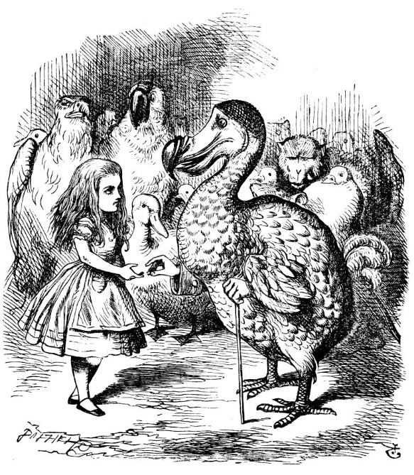
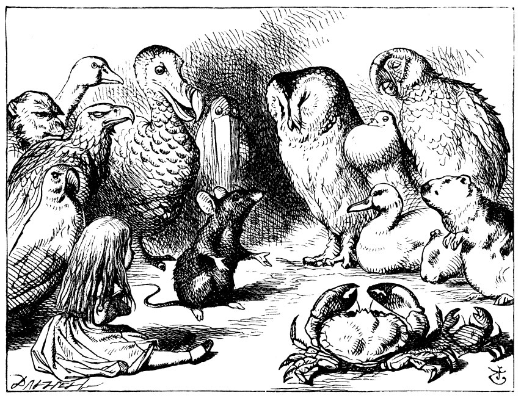

Kıyıda gerçekten de tuhaf görünümlü bir ekip toplanmıştı: Telekleri çamura bulanmış kuşlar, tüyleri vücutlarına yapışmış hayvanlar, hepsi de sırılsıklam, sinirli ve huzursuz.
Kuşkusuz, ilk mesele nasıl kuruyacaklarıydı. Bu konuyu istişare etmeye koyuldular; sanki yıllardır tanışıyorlarmış gibi, birkaç dakika sonra kendini onlarla senli benli konuşurken bulmak Ali-ce’e çok doğal gelmeye başlamıştı bile. Hattâ Papağan’la oldukça uzun bir tartışmaya girişti, sonunda Papağan suratını asıp “Ben senden daha büyüğüm ve senden daha çok şey biliyorum,” diyerek kestirip attıysa da Alice onun yaşını öğrenmedikçe bunu kabul etmediğinden ve Papağan da yaşını söylemeyi kesinlikle reddettiğinden söyleyecek bir şey kalmamıştı.
Nihayet, anlaşıldığı üzere diğerlerine sözü geçen Fare, “Yerinize oturun ve beni dinleyin! Hepinizi kurutacağım!’’ diye haykırdı. Hemen Fare’nin etrafında büyük bir halka oluşturup oturdular. Alice, endişeyle gözlerini Fare’ye dikti, öyle ya, üstünü başını hemen kurutmazsa, çok kötü soğuk alacağını biliyordu.
“Öhö, öhö!” dedi Fare, çalımla. “Herkes hazır mı? Bu bildiğim en iyi kuruma yöntemi. Sessizlik, lütfen! Bir lidere ihtiyaç duyan ve son zamanlarda zapt edilmeye ve fethedilmeye fazlasıyla alışan İngiltere, davası Papa tarafından da desteklenen Fatih William’a boyun eğdi. Mercia ve Northumbria kontları Edwin ve Morcar...” ”Of,” dedi Papağan, soğuktan tir tir titreyerek.
Fare, çatık kaşla ama kibarca, “Affedersiniz! Bir şey mi söylediniz,” dedi.
“Yok, söylemedim,” dedi Papağan telaşla.
“Bir şey dediğinizi sandım da,” dedi, Fare. “Devam ediyorum. Mercia ve Northumbria kontları Edwin ve Morcar da ona bağlı olduklarını ilan ettiler; hattâ vatansever Canterburry Başpiskoposu Stigand bile bunu doğru bularak...”
“Neyi bulmuş?” diye sordu, Ördek.
“Bunu, işte,” diye yanıtladı Fare oldukça sinirlenerek, “bu’nun ne olduğunu tabii ki bilirsin.”
“Kendim bulduğumda, bunun ne olduğunu tabii ki iyi bilirim,” dedi, Ördek. “Bu, genellikle bir kurbağa ya da solucandır. Benim sorumsa, Başpiskoposun neyi bulduğu.”
Fare, bu sözleri dikkate almayıp aceleyle sözlerine devam etti,
“...bunu doğru bularak Edgar Atheling ile beraber Wil!iam’ı karşılamaya ve ona tahtı teklif etmeye gitti. William'ın yönetimi önceleri oldukça ılımlıydı. Ne var ki, ordusundaki Norman askerlerinin küstahlığı...”
Konuşurken Alice’e dönerek, “Şimdi nasılsın, canım,” dedi.
“Hâlâ ıslak,” dedi Alice mahzun mahzun. “Bu anlattıklarınız hiç de bizi kurutacakmış gibi gelmiyor bana.”
“O halde,” dedi Dodo, ayağa kalkıp ciddi bir tavır takınarak, “bu içtimanın, acilen daha müessir tedbirlerin ittihaz edilmesi maksadıyla feshini teklif ediyorum.”
“Doğru dürüst konuş!” dedi Kartal yavrusu, “söylediklerinin yarısının anlamını bile bilmiyorum, üstelik senin bildiğini de sanmıyorum.” Güldüğünü görmesinler diye, Kartal yavrusu başını öne eğdi; kimi diğer kuşlar da kıkırdamaya başladı.
“Şunu önermek istiyordum,” dedi Dodo gücenmiş bir halde, “kurumak için en iyi yol kurul koşusu düzenlemek.”
“Kurul koşusu nedir?” diye sordu Alice, çok da bilmek istediğinden değildi, ama Dodo binlerinden bir soru bekler gibi duraksa-mıştı, hiç kimsenin de bir şey sormaya pek niyeti yok gibiydi.

“Tabii ki bunu açıklamanın en iyi yolu, yapmak olacaktır.”
(Olur ya, bir kış günü siz de bunu yapmayı denerseniz diye, Do-do’nun nasıl yaptığını size anlatacağım.)
Dodo, ilk önce, daireye benzer bir yarış pisti çizdi (“Şekli tam benzetmenin pek bir önemi yoktur,” dedi), sonra da bütün ekip pist etrafında oraya buraya dizildiler. “Bir, iki, üç, başla,” gibisinden bir şey yoktu, istedikleri anda koşmaya başladılar, canları istedikleri anda da yarıştan ayrıldılar, bu yüzden yarışın ne zaman bittiğini bilmek pek kolay olmadı. Neyse, sonuçta, yaklaşık yarım saat koşmanın ardından hepsi kupkuru olmuşlardı. Dodo, birden, ”Yarış bitti!” diye bağırdı; hepsi Dodo'nun etrafını sarıp nefes nefese, “Peki ama kim kazandı?” diye sordular.
Dodo bu soruyu yanıtlamadan önce uzun bir süre düşünmek zorundaydı; diğerleri onu bekleyedursunlar, Dodo bir parmağını şakağına dayamış bir halde (genellikle Shakespeare’in resimlerinde gördüğünüz şekil) öylece oturuyordu. Nihayet, “Herkes kazandı, hepiniz ödülü hak ettiniz,” dedi.
“O halde ödülleri kim verecek?” diye sordular, hep bir ağızdan.
“Tabii ki O,” dedi Dodo, parmağıyla Alice’i işaret ederek; bütün ekip bir anda, “Ödül! Ödül!” diye bağırarak Alice'in etrafını sardı.
Alice ne yapacağını bilmiyordu, umutsuzluk içinde elini cebine sokup bir kutu şekerleme çıkarıp (neyse ki tuzlu su kutudan içeri girmemişti) ödül olarak onlara dağıttı. Her birine tam tamına bir şeker düştü.
“Ama olmaz ki, kendisine de bir ödül olmalı dedi Fare.
“Tabii, tabii,” diye cevap verdi Dodo ciddî bir tavırla. “Başka ne var cebinde,” diye devam etti, Alice’e dönerek.
“Sadece bir yüksük,” dedi Alice, üzgün üzgün.
“Buraya uzat,” dedi Dodo.
Ardından da gayet resmi bir tavırla, “Bu zarif yüksüğü kabul buyurmanızı istirham ediyoruz,” diyerek yüksüğü sunarken, herkes yeniden Alice’in etrafına toplanmıştı; bu kısa konuşma biter bitmez herkes alkışladı.
Alice bütün bunların çok saçma olduğunu düşünüyordu, ama herkes o denli ciddi görünüyordu ki, gülmeye pek cesaret edeme-di; söyleyecek bir şey bulamadı, sadece olabildiğince ağırbaşlı gözükmeye çalışarak eğilip selam verdi ve yüksüğü aldı.
Sıra şekerlemeleri yemeğe gelmişti; bu durum biraz gürültü patırtıya yol açtı; büyük kuşlar bunların dişlerinin kovuklarına bile gitmediğinden yakınırken, şekerler küçüklerin de boğazlarına kaç-tı ve sırtlarına vurmak gerekti. Yine de en sonunda bu iş de bitti; hepsi yeniden halka halinde Fare’nin etrafına oturup kendilerine bir şeyler anlatması için ona yalvardılar.
“Bana hikâyeni anlatacağına söz vermiştin,” dedi Alice ve yine küseceğinden biraz çekinerek fısıltıyla ekledi, “Neden Ke... ile Kö...’den nefret ediyorsun?”
“Dönüp de arkama baktığımda upuzun ve acıklı,” dedi Fare, Alice’e bakıp ah çekerek.
“Haklısınız, uzun,” dedi Alice, şaşkınlıkla Fare’nin arkasındaki jyruğa bakarak, “fakat neden acıklı?” Fare’nin konuşması sıra-)da Alice’in şaşkınlığı devam etti, o yüzden arkasındakiyle ilgili attıklarından şöyle bir şey canlanıverdi gözünün önünde:
“Hadi”
dedi öfkeli
evde gördüğü
fareye,
“Doğruca
mahkemeye,
davacıyım
senden.
Gel,
itiraz
istemem
ille de
mahkeme.
Yok zira
bu sabah
hiç işim
gerçekten de.”
Dedi ki
fare
bu azgın ite,
“Olur mu hiç,
sayın
bayım
böyle
mahkeme.
jürisiz,
hâkimsiz
boşa tükenir
nefesimiz.”
“Benim hakim,
benim jüri'“
dedi
kocarruş
kurnaz
öfkeli,
“Görüp
bütün
davayı
ve-
re-
ce-
ğim
ölüm
ka-
ra
rı
nı”

‘‘Aklın burada değil!” diye çıkıştı Alice’e Fare. “Ne düşünüyorsun, bakalım?”
“Özür dilerim,” dedi Alice ezile büzüle, “Sanırım beşinci büküme kadar gelmiştiniz.”
“Ne düğümü?!” diye bağırdı Fare öfkeyle.
Her an başkalarına yardıma hazır olan Alice hevesle etrafına bakınarak “Düğüm ha!” dedi. “Ah izin verin, çözmenize yardım edeyim!”
“İzin mizin vermeyeceğim,” dedi Fare, kalkıp oradan uzaklaşarak. “Böyle saçma sapan konuşarak bana hakaret ediyorsun!”
“Öyle demek istemedim,” diye yalvarıp yakardı, zavallı Alice.
“Ama siz de öyle çabuk küsüyorsunuz ki!”
Fare, buna yalnızca homurdanarak cevap verdi. “Ne olursunuz, gelip hikâyenizi bitirin,” diye seslendi, Alice ardından. Ötekiler de hep bir ağızdan, “Hadi ama lütfen hikâyeni bitir!” dediler. Ne ki, Fare, başını acele acele sallayıp adımlarını biraz daha hızlandırdı.
Fare gözden kaybolur kaybolmaz, Papağan, “Kalmadığı yazık oldu,” diye iç geçirdi; yaşlı bir Yengeç bunu fırsat bilerek, kızına, ”Bak yavrum, Bu sana kendini kaybetme konusunda bir ders olsun!” dedi. “Çeneni tut, anne!” dedi küçük Yengeç aksi bir tavırla. ”Sen bir istiridyenin sabrını bile taşırmaya yetersin!”
“Ah, keşke şu bizim Dinah burada olsaydı!” diye bağırdı Alice, ortaya öylece. “Hemen, gidip getirirdi onu!”
“Kusura bakmayın, ama Dinah’ın kim olduğunu sorabilir miyim?” dedi Papağan.
Alice, kedisi hakkında konuşmaya her an hazır olduğundan hemen atıldı: “Dinah bizim kedimiz. İnanmazsınız ama fare yakalamakta üstüne yok! Ah keşke bir de kuşların ardından gidişini görseniz! Bir kuşu görmesiyle, onu yutuvermesi bir olur!”
Bu konuşma orada bulunanlar arasında müthiş bir heyecan yarattı. Kimi kuşlar, oradan alelacele uzaklaştılar; yaşlı bir Saksağan, dikkatlice sarınarak, “Gerçekten gitsem iyi olacak, gecenin serinliği boğazıma pek iyi gelmiyor,” dedi; bir Kanarya sesi titreyerek yavrularına, “Hadi canlarım, bu saatte çoktan yatakta olmalıydınız!” diye seslendi. İşte böylece, hepsi çeşitli bahanelerle oradan uzaklaştılar. Alice, öylece yapayalnız kalmıştı.
“Keşke Dinah’tan hiç bahsetrnieseydim!” dedi kendi kendine hüzünle. “Aşağıda hiç kimse onu sevmiyor sanki. Oysa o dünyanın en iyi kedisi! Ah, benim canım Dinah’ım! Seni bir daha görebilecek miyim, acaba?” İşte yine zavallı Alice ağlamaya başlamıştı, kendini öyle yapayalnız, öyle keyifsiz hissediyordu ki. Derken, uzaktan bir yerlerden ayak sesleri duymaya başladı; Fare’nin fikir değiştirip hikâyesini bitirmek üzere geri geldiği ümidiyle başını kaldırıp hevesle baktı.